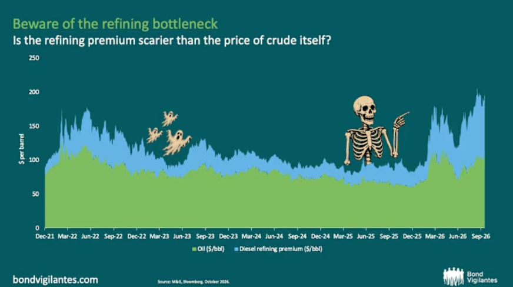

Policy response to South Korea's falling fertility and rising old-age burden.
Fertility fell from over 6 births per woman to below 1 while old-age dependency passed 25, so pension and care policy needs strengthening.
Replicating a Bond Vigilantes (M&G) chart on the diesel refining premium.

Source: Bond Vigilantes (M&G), Bloomberg, October 2026
I replaced the question title with a message headline, swapped the legend for direct labels, added source and units, and used a white background.
Female labour force participation
World Bank Indicators API (live link: the chart reloads the data every time the page opens).
Scraped FCA's yearly fines pages with pandas; fixed renamed columns, two-digit years and text in amounts; saved tidy CSV.
Notebook: Google Colab